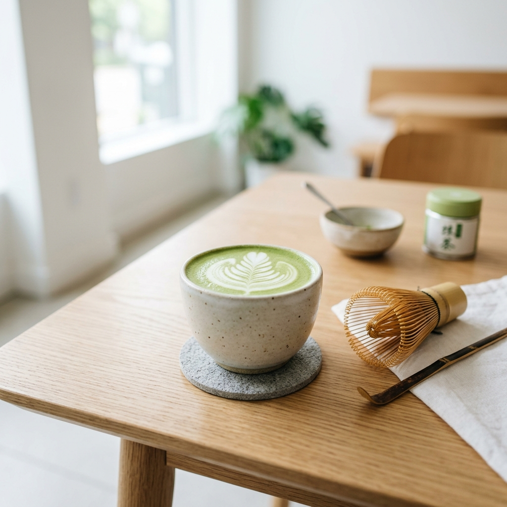

Why Gen Z is Ditching Coffee Shops for This Odd Tea Habit

For decades, coffee shops were the ultimate social hubs for young people. Students and young professionals gathered at local cafes, spending seven dollars on iced lattes while working on their laptops. However, a major cultural shift is occurring. Gen Z is starting to ditch traditional coffee shops. Instead, they are adopting an unexpected new tea habit: brewing yerba mate and ceremonial matcha at home.
Key Insights and Analysis
Let us explore why this new trend is taking over social media and changing how a generation gets energized.
The first driver of this trend is health and wellness. Traditional coffee is known for causing jitteriness, anxiety, and a sudden energy crash in the afternoon. Gen Z is highly focused on mental health and clean energy. Matcha and yerba mate contain L-theanine, an amino acid that promotes focus and releases caffeine slowly over several hours. This results in a sustained energy boost without the coffee jitters or subsequent crash.
How to Apply This Strategy
The second factor is cost. Buying a premium coffee daily costs over two hundred dollars a month. In a challenging economy, young people are looking for ways to cut expenses without sacrificing their daily rituals. Preparing ceremonial matcha or loose-leaf yerba mate at home costs less than fifty cents per serving, saving hundreds of dollars monthly.
Third, tea brewing has become a popular self-care ritual. Brewing loose-leaf tea requires patience. Whisking matcha with a bamboo whisk or preparing yerba mate in a traditional gourd provides a moment of mindfulness in a busy digital day. Gen Z shares these aesthetic brewing rituals on TikTok and Instagram, turning a daily beverage into a viral social trend.
Fourth, tea offers a wider range of flavors and health benefits. From antioxidant-rich green teas to calming chamomile and digestive herbal blends, young consumers can customize their beverages to match their daily health goals.
In conclusion, the decline of the coffee shop index is a reflection of a generation's changing priorities. Gen Z's preference for matcha and mate represents a shift toward sustainable energy, financial prudence, and mindful self-care. It is a healthy, budget-friendly habit that is here to stay. Share your favorite tea recipes in the comments below, and subscribe to ViralBuzz for more pop culture trends!
Moreover, the health benefits of matcha are a major driving factor in this cultural shift. Unlike coffee, which often causes jittery energy spikes followed by sudden crashes, matcha provides a sustained release of energy. This is due to the presence of L-theanine, an amino acid that promotes relaxation and mental clarity without drowsiness. Gen Z, a generation that values mental health and wellness, finds this smooth, focused energy much more compatible with their demanding study and remote work schedules. The aesthetic appeal of the vibrant green drink also makes it a favorite on social media platforms like TikTok and Instagram, further cementing matcha's status as a lifestyle staple rather than just a morning caffeine fix. This combination of wellness, sustained performance, and digital aesthetics explains its viral rise among digital natives.